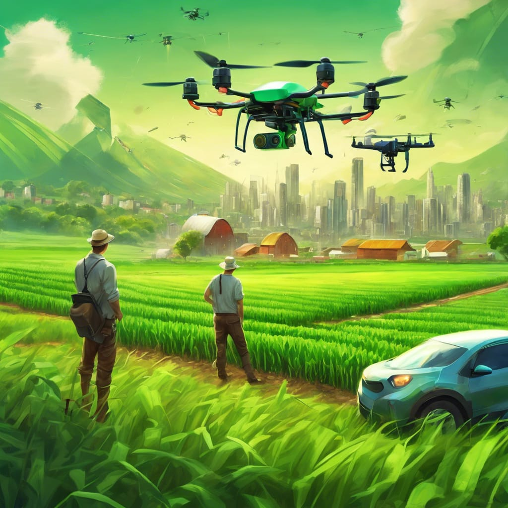

Oportunidades que a tecnologia trás para os agricultores.
A agricultura tem se beneficiado enormemente com o avanço da tecnologia nos últimos anos. Com inovações que vão desde máquinas automatizadas até sistemas de monitoramento via satélite, os agricultores agora têm à sua disposição uma variedade de ferramentas que facilitam o trabalho no campo e aumentam a produtividade.
Um exemplo são os drones,que são pequenas máquinas às quais são acopladas câmeras fotográficas que geram imagens de alta resolução.
Que podem facilitar atividades agricolas a seguir:
- Identificar regiões onde ocorreram falhas de plantio ou onde as plantas estão crescendo desuniformes;
- Utilizadas para mapeamento e demarcação de locais escolhidos para o plantio;
- Monitorar pragas e doenças no plantio;
- Realizar a pulverização de defensivos na plantação.

Outra tecnologia é o sistema de irrigação inteligente, que podem ser usados juntamente com os sensores de solo e o do clima.